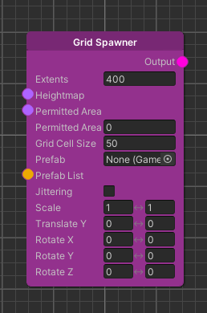
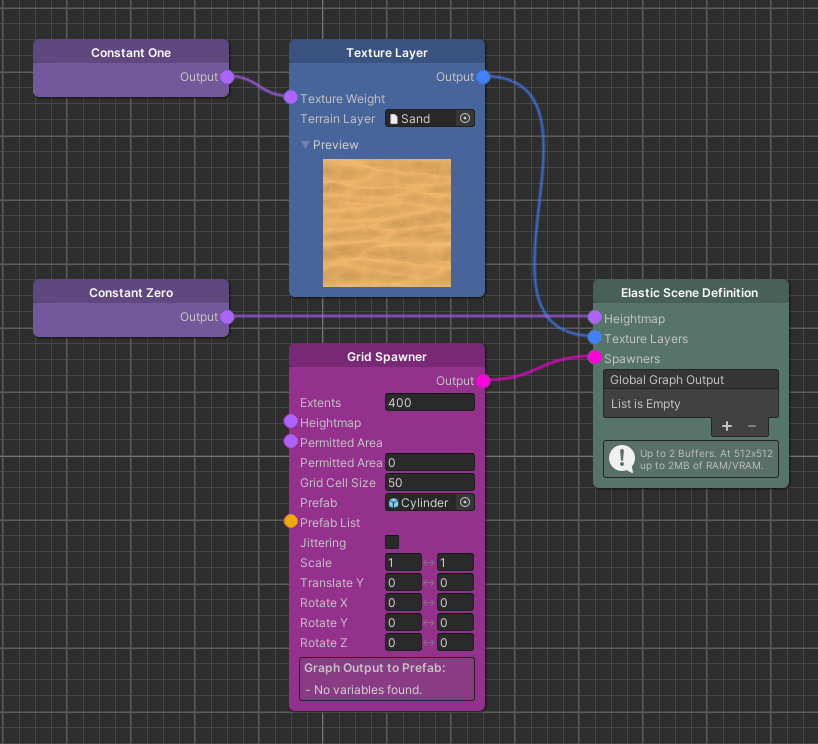
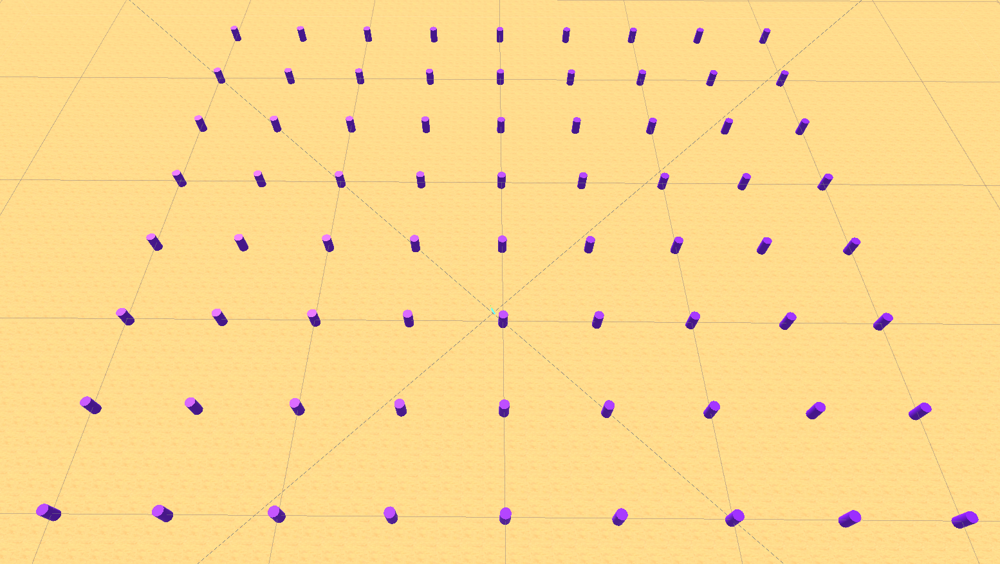
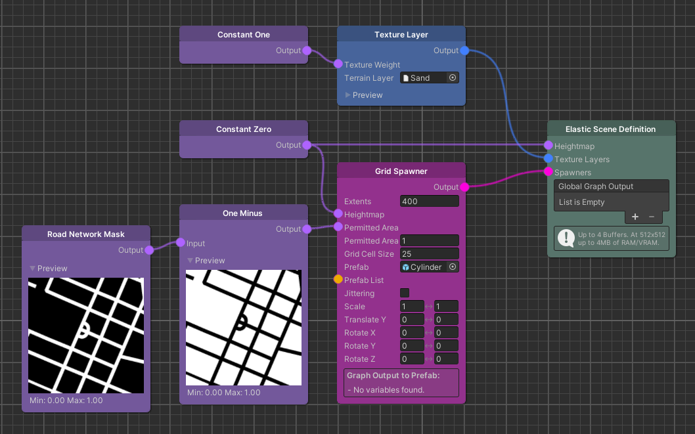
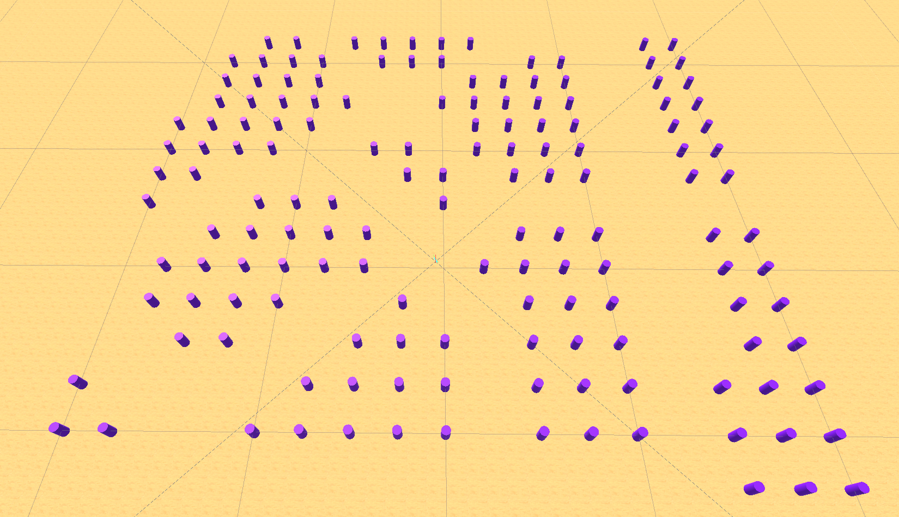
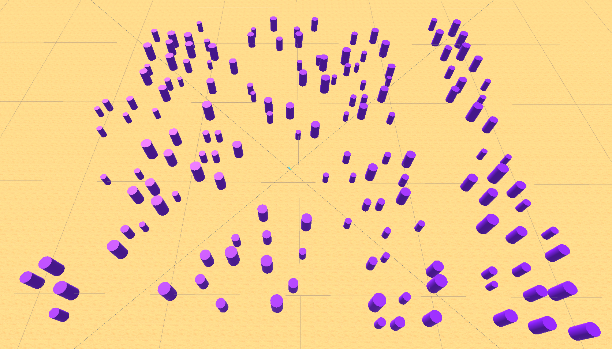
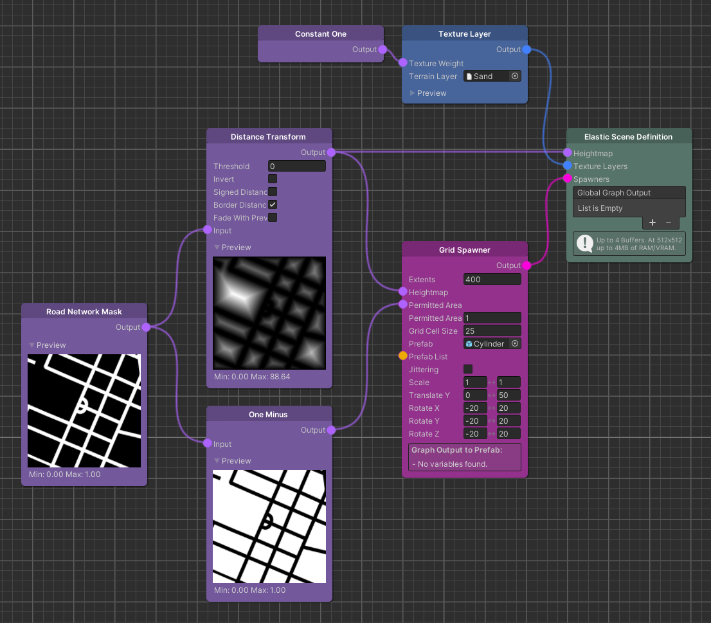
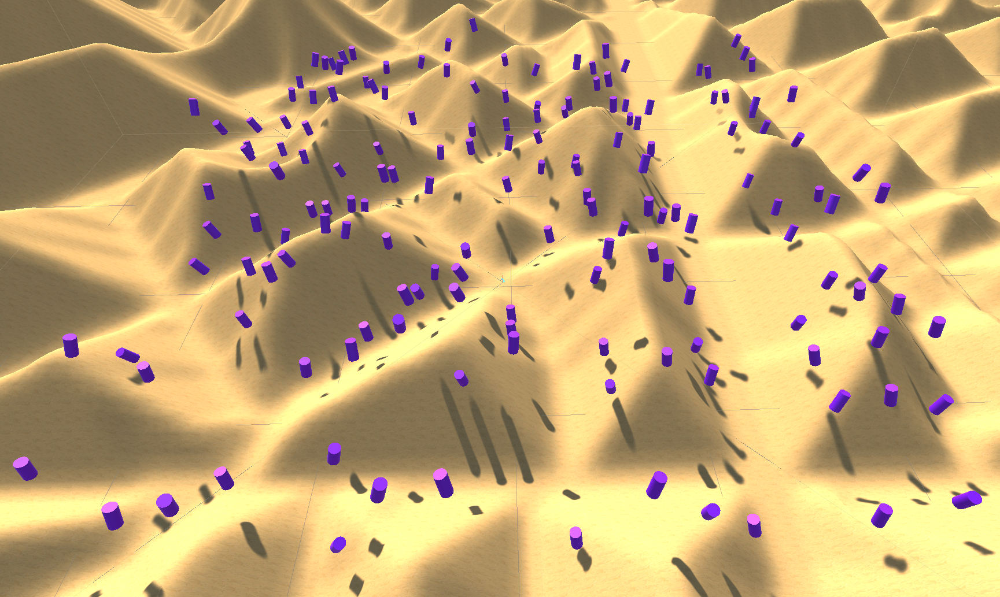

Grid Spawner & Permitted Area
The Elastic SDK graph system comes with a variety of different Spawner nodes, some of which serve a specific purpose, while others can be used in a more general way. One of these general Spawners is the Grid Spawner node. Due to its easy setup and fast performance, it is specifically useful for large numbers of decoration objects such as trees, rocks and bushes.

As the name suggests, the Grid Spawner is capable of spawning objects in a grid. Because there is no Pose pipeline, we have integrated the most important operations directly into this node.
In short: The idea behind the Grid Spawner is to spawn many static objects in a performance-oriented way while allowing some basic randomization in size, position, and rotation.
In the following guide we will take a deeper look at the Grid Spawner node.
Grid Spawner
We start by creating a Grid Spawner node in our graph. As we can see the node has several parameters. First, the Extents parameter which reflects the edge length of the Moving Grid.
Next, the Heightmap parameter through which the Y-position of the Prefab instances are adjusted. This means that the instances always spawn with the height that was given by a heightmap.
The initial X and Z-position of the instances result from the grid they are spawned in. Assuming the same Extents increasing the Cell Size value means less but bigger cells to spawn in, thus more space between instances, and vice versa.
The Prefab to create instances from can be set from the single Prefab selection field or via the Prefab List input.
 
With this setup we have a big square with regular placed Prefabs in it. In most cases this is not admirable. We would like to use only some areas for spawning the objects. This is where the Permitted Area comes into play.
Permitted Area
The Grid Spawner also provides a Map node input called Permitted Area. This input can be used to mask off areas where no game objects should get instantiated e.g. the road network.
To mask off the road network we can easily create a negative of the Map by using the One Minus node. Furthermore, we decrease the Grid Cell Size to see the effect better.
With the Permitted Area Threshold, which currently is 1, we can adjust the threshold when Prefabs are spawned. This is directly linked to the area where they are spawned. In this case, the value ranges from 0 (no effect) to 1 (roads fully masked off).
 
Now we have a grid that excludes the roads but there is still some more to know about the Grid Spawner.
Randomization of objects
To include some randomization to the grid we added some functionality. The first one is Jittering which will slightly adjust the X and Z position of each game object to break out of the strict grid-structure. This will come in handy if you need a more natural distribution. The same goes with Scaling. The default value is 1 which translates to 100%. To have some differences we just change the upper value to 2 (200%). Effectively this means that, for each instance, a random scale between 1 and 2 will be multiplied with the original scale of the Prefab. This value is then set as the new scale on the spawned instance.

To add even more variety it is also possible to change the range of the height of the Prefab via the Translate Y node. Although it is already done by the heightmap, in some cases it is desirable to adjust the value. Therefore, the Translate Y value is the number in meters that is added to the height of the game object. To visualize this difference we create a simple heightmap with the Distance Transform node and increase the Shadow Distance in the settings to clarify that the game objects are floating in the air.
As well as we can change the position of the Prefab instances, we can also change their rotation. To do this, we change the values of Rotation X/Y/Z which give the range of degrees added to the rotation of the instances. Both negative and positive values are allowed.
 